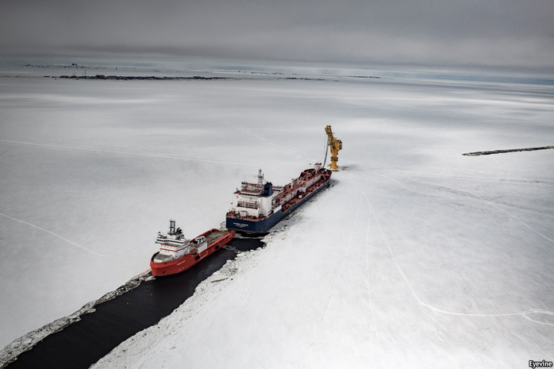
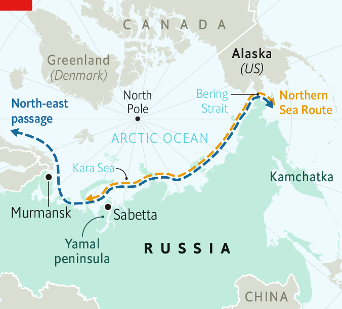
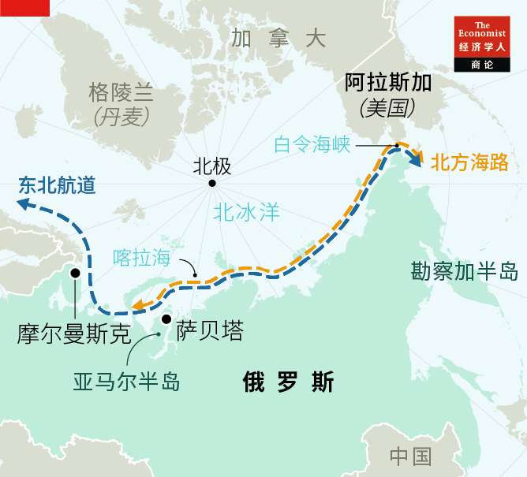

Text
2021-05-06T05:04:09+00:00
Liquefied natural gas
液化天然气
液化天然氣
The polar silk road
极地丝路
極地絲路
Warmer Arctic waters could turn the tides in LNG markets
北极水域升温可能扭转LNG市场的形势
北極水域升溫可能扭轉LNG市場的形勢
EXPLORERS TRIED for centuries to find a viable route through the Arctic to link Europe and Asia. SS Vega was the first to transit the north-east passage connecting the two, in 1879, but it was only in 1932 that a ship—the icebreaker A. Sibiryakov—made the trip in one go, without having to stop for the winter. What little commercial shipping there was along the route all but vanished after the fall of the Soviet Union.
几个世纪里，探险家试图找到一条穿越北极连接欧洲和亚洲的可行航线。1879年，织女星号（SS Vega）率先穿越了连接欧亚的东北航道，但中途不得不停下来过冬，直到1932年，西比里亚科夫号（A. Sibiryakov）破冰船才首次不间歇地完成航程。苏联解体后，这条航线上零星的商业航运也几乎完全消失了。
幾個世紀里，探險家試圖找到一條穿越北極連接歐洲和亞洲的可行航線。1879年，織女星號（SS Vega）率先穿越了連接歐亞的東北航道，但中途不得不停下來過冬，直到1932年，西比里亞科夫號（A. Sibiryakov）破冰船才首次不間歇地完成航程。蘇聯解體後，這條航線上零星的商業航運也幾乎完全消失了。
The discovery and extraction of vast liquefied natural gas (LNG) reserves on the Yamal peninsula in Siberia in the past decade has renewed interest in bulk transport on the waters of the high north. The warming of the Arctic, and the development of ice-strengthened tankers able to cleave their way through floes up to two metres thick, now make it possible to ship gas and other materials year-round, though especially cold winters may still hinder traffic.
过去十年，随着在西伯利亚亚马尔半岛（Yamal）发现储量巨大的液化天然气（LNG）并实现开采，在北极水域运输散装货物的兴趣重燃。由于北极变暖，加之开发出了能够穿过厚达两米的浮冰的破冰油轮，现在已经能够在这条航线上全年无休地运输天然气和其他原材料，尽管在特别寒冷的冬天里交通仍可能受阻。
過去十年，隨着在西伯利亞亞馬爾半島（Yamal）發現儲量巨大的液化天然氣（LNG）並實現開採，在北極水域運輸散裝貨物的興趣重燃。由於北極變暖，加之開發出了能夠穿過厚達兩米的浮冰的破冰油輪，現在已經能夠在這條航線上全年無休地運輸天然氣和其他原材料，儘管在特別寒冷的冬天裡交通仍可能受阻。
In January this year, thanks to a rise in Asian economic activity and high consumer demand, it was profitable for three vessels carrying LNG to travel between the Sabetta terminal on the Yamal peninsula and north Asian ports. As hydrocarbons begin their decline, Novatek, the Russian company that commissioned these shipments, is gambling on sustained or even growing demand from Asian and European markets.
今年1月，由于亚洲经济活动升温以及消费者需求旺盛，有三艘船从亚马尔半岛的萨贝塔港（Sabetta）向北亚港口运输LNG并实现了盈利。随着油气价格开始下跌，委托这些运输的俄罗斯公司诺瓦泰克（Novatek）正押注于亚洲和欧洲市场的需求将持续下去甚至增长。
今年1月，由於亞洲經濟活動升溫以及消費者需求旺盛，有三艘船從亞馬爾半島的薩貝塔港（Sabetta）向北亞港口運輸LNG並實現了盈利。隨着油氣價格開始下跌，委託這些運輸的俄羅斯公司諾瓦泰克（Novatek）正押注於亞洲和歐洲市場的需求將持續下去甚至增長。
The three ships were new Arc-7 class tankers, with engines running on the same gas contained in their hulls. This makes them far less polluting than conventional ships powered by bunker diesel. Russia is especially nervous about maritime accidents after the 1989 Exxon Valdez disaster in Alaska, which was difficult to clean up and caused extensive environmental damage. Russian lawmakers raged against Nornickel, a miner of metals, after a diesel spillage last year, whacking it with a fine of 146bn roubles ($2bn)—the biggest environmental penalty ever imposed on a Russian company. If the Arc-7 ships did run aground or get crushed in the ice, there would be next to no slick and their cargo of LNG would evaporate.
这三艘船都是新型Arc-7级油轮，它们的发动机使用的燃料正是船上装载的天然气，这使得它们的污染程度远小于使用船用柴油的传统船只。1989年埃克森·瓦尔迪兹号（Exxon Valdez）油轮在阿拉斯加发生海难，油污难以清理并造成广泛的环境破坏，自那以后俄罗斯对海上事故尤为紧张。去年金属矿业公司诺镍集团（Nornickel）发生了一起柴油泄漏事故，俄罗斯议员大为光火，对它开出了1460亿卢布（20亿美元）的罚单，创下有史以来俄罗斯企业环保罚金的最高记录。如果Arc-7级油轮搁浅或撞冰破裂，基本上不会产生浮油，船上装载的LNG只会挥发殆尽。
這三艘船都是新型Arc-7級油輪，它們的發動機使用的燃料正是船上裝載的天然氣，這使得它們的污染程度遠小於使用船用柴油的傳統船隻。1989年埃克森·瓦爾迪茲號（Exxon Valdez）油輪在阿拉斯加發生海難，油污難以清理並造成廣泛的環境破壞，自那以後俄羅斯對海上事故尤為緊張。去年金屬礦業公司諾鎳集團（Nornickel）發生了一起柴油泄漏事故，俄羅斯議員大為光火，對它開出了1460億盧布（20億美元）的罰單，創下有史以來俄羅斯企業環保罰金的最高記錄。如果Arc-7級油輪擱淺或撞冰破裂，基本上不會產生浮油，船上裝載的LNG只會揮發殆盡。
Non-ferrous metals constitute some of the traffic along the Northern Sea Route (NSR), which runs from the Kara Sea to the Bering strait, but gas is fuelling the revival. And Novatek, which owns the LNG exploitation rights and infrastructure on the Yamal peninsula, is behind it.
在从喀拉海到白令海峡的北方海路（Northern Sea Route）上，有色金属占据了一部分运输量，但天然气才是这条航路复兴的主要驱动力。拥有亚马尔半岛LNG开采权和基础设施的诺瓦泰克是幕后推手。
在從喀拉海到白令海峽的北方海路（Northern Sea Route）上，有色金屬佔據了一部分運輸量，但天然氣才是這條航路復興的主要驅動力。擁有亞馬爾半島LNG開採權和基礎設施的諾瓦泰克是幕後推手。
Vladimir Putin’s government provided a leg-up to Novatek, including through generous tax breaks. These have accelerated Russia’s LNG capabilities. Novatek used to rely on Japanese expertise to extract and compress gas in the extreme Arctic conditions. “Now Russia is fully self-sufficient in LNG technology,” says Alexander Sergunin of St Petersburg State University.
普京政府为诺瓦泰克提供了支持，包括慷慨的税收优惠。这加速了俄罗斯LNG产业的发展。诺瓦泰克过去依靠日本专业技术在北极的极端条件下提取和压缩天然气。“现在俄罗斯的LNG技术已经完全自给自足了。”圣彼得堡国立大学的亚历山大·谢尔古宁（Alexander Sergunin）说。
普京政府為諾瓦泰克提供了支持，包括慷慨的稅收優惠。這加速了俄羅斯LNG產業的發展。諾瓦泰克過去依靠日本專業技術在北極的極端條件下提取和壓縮天然氣。“現在俄羅斯的LNG技術已經完全自給自足了。”聖彼得堡國立大學的亞歷山大·謝爾古寧（Alexander Sergunin）說。
Novatek’s main advantage is a much shorter sail to market. The NSR makes a voyage between some Asian and European ports about 4,000 miles shorter than the Suez canal route, saving an average of ten days at sea. New shipment hubs near Murmansk in the west, and in Kamchatka in the east, will further speed up conveyance.
诺瓦泰克的主要优势是大大缩短了通向市场的航程。与苏伊士运河航线相比，通过北方海路运往部分亚洲和欧洲港口的航程要短4000英里左右，平均能节省10天的海上运输时间。海路西端的摩尔曼斯克附近和东端的堪察加半岛（Kamchatka）新建的航运中心还将进一步加快运输速度。
諾瓦泰克的主要優勢是大大縮短了通向市場的航程。與蘇伊士運河航線相比，通過北方海路運往部分亞洲和歐洲港口的航程要短4000英里左右，平均能節省10天的海上運輸時間。海路西端的摩爾曼斯克附近和東端的堪察加半島（Kamchatka）新建的航運中心還將進一步加快運輸速度。
The idea is to use the Arc-7 tankers as ice shuttles between Sabetta and these new hubs. Standard tankers, which are cheaper to build and operate, will then move the gas to customers. The distance between Murmansk and the big north European ports, and Kamchatka and the big north Asian ones, is about a quarter of the distance between the Middle Eastern LNG export hubs and the Asian or European hubs. Arild Moe of the Fridtjof Nansen Institute, a think-tank in Lysaker, Norway, notes that the Yamal peninsula could supply at least 70m tonnes of LNG a year by the end of the decade—almost as much as Qatar, the world’s biggest exporter, manages today.
其构想是使用Arc-7级油轮在萨贝塔港和这些新航运中心之间破冰往返。然后使用造价更低、运营更便宜的标准油轮将天然气运送给客户。从摩尔曼斯克到北欧大型港口，以及从堪察加半岛到北亚大型港口，距离只有中东LNG出口中心到亚洲或欧洲大型港口的四分之一左右。位于挪威吕萨克（Lysaker）的智库南森研究所（Fridtjof Nansen Institute）的阿里尔德·莫伊（Arild Moe）指出，到2030年，亚马尔半岛每年可以供应至少7000万吨LNG——几乎和世界最大LNG出口国卡塔尔如今的供应量差不多。
其構想是使用Arc-7級油輪在薩貝塔港和這些新航運中心之間破冰往返。然後使用造價更低、運營更便宜的標準油輪將天然氣運送給客戶。從摩爾曼斯克到北歐大型港口，以及從堪察加半島到北亞大型港口，距離只有中東LNG出口中心到亞洲或歐洲大型港口的四分之一左右。位於挪威呂薩克（Lysaker）的智庫南森研究所（Fridtjof Nansen Institute）的阿里爾德·莫伊（Arild Moe）指出，到2030年，亞馬爾半島每年可以供應至少7000萬噸LNG——幾乎和世界最大LNG出口國卡塔爾如今的供應量差不多。
If the overseas bet does not pay off, there are always domestic consumers. Only 70% of Russia is on the gas grid. LNG is generally accepted as the preferred short-term replacement for diesel fuel in deep-sea cargo vessels. And the plastics and composites sector is growing, too. Russia is also working on a hydrocarbon diversification plan. Last year Alexander Novak, a deputy prime minister, launched a committee with big producers, including Novatek and Gazprom, to set the strategy.
如果海外市场的表现不如人意，那还有本国消费者。俄罗斯只有70%的地区接入了天然气管网。LNG是公认的远洋货船柴油燃料的首选短期替代品。塑料和复合材料行业也在增长。俄罗斯还在制定一项油气产业多元化计划。去年，俄罗斯副总理亚历山大·诺瓦克（Alexander Novak）与诺瓦泰克和俄罗斯天然气工业公司（Gazprom）等大型生产商成立了一个委员会来制定相关战略。
如果海外市場的表現不如人意，那還有本國消費者。俄羅斯只有70%的地區接入了天然氣管網。LNG是公認的遠洋貨船柴油燃料的首選短期替代品。塑料和複合材料行業也在增長。俄羅斯還在制定一項油氣產業多元化計劃。去年，俄羅斯副總理亞歷山大·諾瓦克（Alexander Novak）與諾瓦泰克和俄羅斯天然氣工業公司（Gazprom）等大型生產商成立了一個委員會來制定相關戰略。
As for the route itself, container shipping currently attracts little interest. Because Russia imposes certain rules on transit through the NSR, ships must seek permission for passage. That annoys the Americans, who call for free movement in all waters. But the Panama and Suez canals are increasingly crowded; untenable tailbacks there, or a war in the Middle East, could perhaps tempt shipping companies north. By that time, Russia may have built a fleet of ice-strengthened behemoths. ■
回到这条航线本身，目前市场对集装箱运输的兴趣不大。由于俄罗斯对北方海路运输实施了某些规定，船只必须申请通行许可。美国人对此十分不满，他们呼吁在所有水域允许自由航行。但是，巴拿马和苏伊士运河正变得越来越拥挤；一旦运河大排长龙的局面难以维续，或者中东爆发战争，就可能会吸引航运公司绕行北方。到那时，俄罗斯可能已经造好一支破冰巨轮舰队了。
回到這條航線本身，目前市場對集裝箱運輸的興趣不大。由於俄羅斯對北方海路運輸實施了某些規定，船隻必須申請通行許可。美國人對此十分不滿，他們呼籲在所有水域允許自由航行。但是，巴拿馬和蘇伊士運河正變得越來越擁擠；一旦運河大排長龍的局面難以維續，或者中東爆發戰爭，就可能會吸引航運公司繞行北方。到那時，俄羅斯可能已經造好一支破冰巨輪艦隊了。